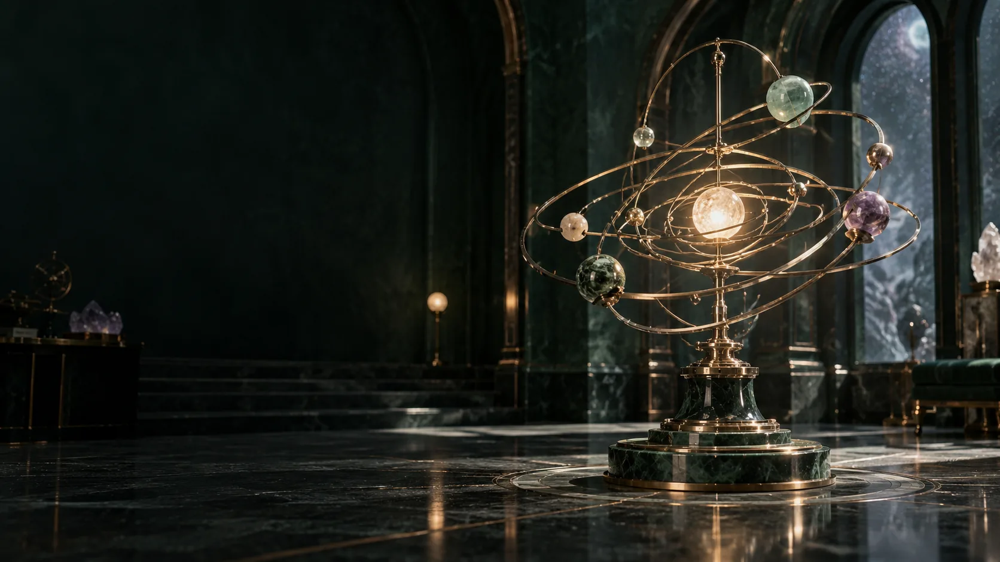

All pages · Luke Nathan Hayes
Choose your next chapter
The complete plan, its sources and the material for continuing the work.

- The invitationCommunity compute. Useful heat. Local ownership.
- The federationA shared direction does not require everyone to become the same organisation.
- National discoveryOne geographic opportunity register connects national outreach with local installation decisions.
- Installation & heatBrad’s team turns each site and workload brief into an engineered, commissioned and maintainable node.
- Workforce learningCapture skilled work once, then turn it into usable learning for the next crew.
- What runs hereThe uploaded programmes supply part of the workload base, not a closed catalogue of permitted uses.
- Finance & ownershipCapital accelerates installation; it does not purchase a permanent claim over the community.
- The numbersA transparent starting scenario, ready for Brad’s costs and Megan’s commercial work.
- Generational renewalThe long-lived local asset is the capability around the rack, not a promise that today’s hardware stays frontier forever.
- Law & stewardshipLegal intelligence is a development workstream within the federation, with Luke’s progression plans carried forward.
- Component briefsMegan and Brad can take their own briefs into their agents and return work that fits the shared plan.
- Next developmentDevelop the components in parallel, then join them around actual sites and operating relationships.
- Document library
- Project connections
- Downloads
- Licence
- All pages
- Presentation view